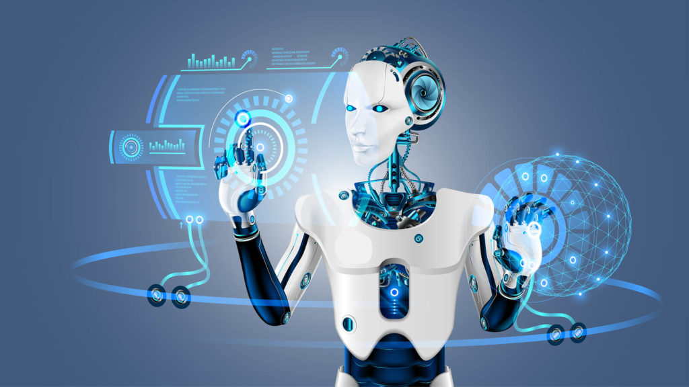
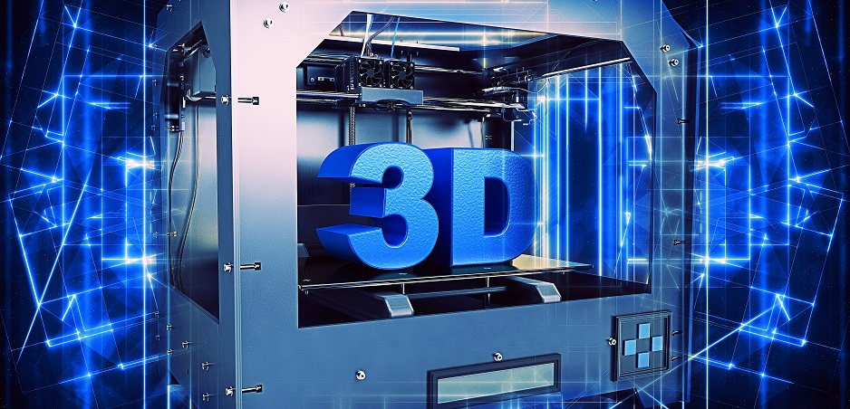
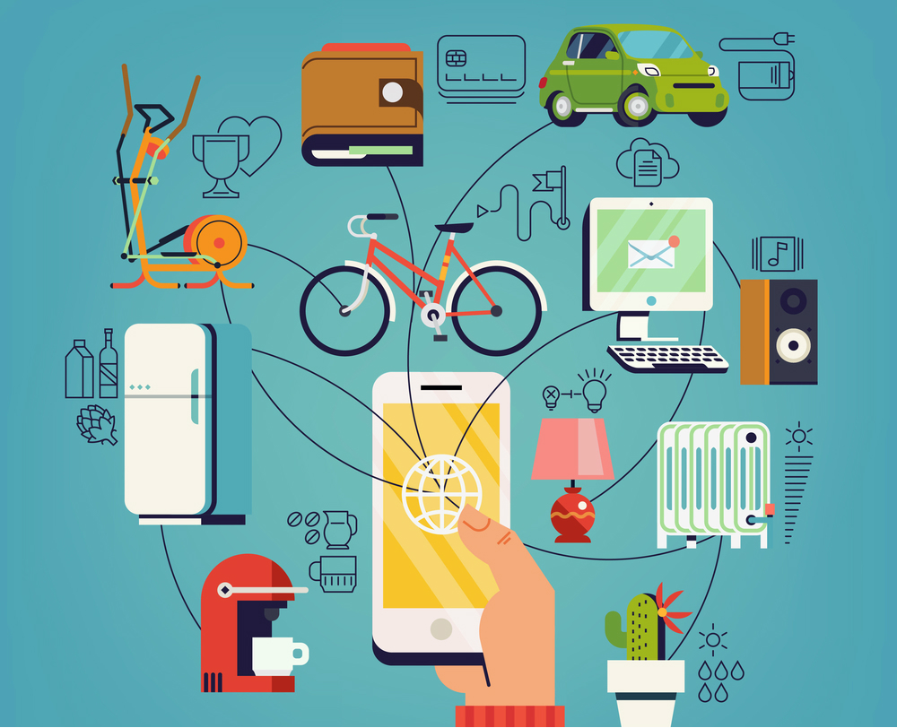
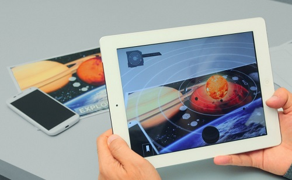

PROJEÇÃO PARA FUTURO!
Timeline da programação
A cada dia surgem novas tendências no mundo, principalmente envolvendo a área de tecnologia, que
prometem mudar a
nossa forma de nos relacionarmos com o mundo e facilitar o crescimento das empresas. É natural que a população
fique cada vez mais conectada e que aquelas empressas que não consideram os investimentos em tecnologia como um
diferencial, se arrisquem de ficar em desvantagem na corrida com a concorrência. É crucial que estejamos atentos
a essas novas tendências a fim de estarmos preparados quando elas se tornarem realidade.
Dentre os assuntos mais promissores como tendências dos próximos anos temos: computação na nuvem (Cloud
Computing), internet das coisas, inteligência artificial, realidade aumentada, Blockchain e impressão 3D.
 Blockchain
Blockchain
Blockchain é toda a estrutura de dados que permite que as transações com a moeda virtual
Bitcoin — criada em
2009 — sejam feitas de forma segura, sem os riscos de adulteração ou roubos. O principal diferencial dessa
tecnologia para os próximos anos é permitir que os pagamentos eletrônicos
sejam feitos com a mesma eficácia dos pagamentos reais, mas de maneira rápida e fácil, principalmente, por
meio dos dispositivos móveis.
Cloud Computing
O Data Center para o armazenamento de dados será aposentado, para dar espaço ao armazenamento
online — algo
que representa para as empresas uma redução de custos em 35%. Mais importante que armazenar todos os
arquivos e documentos em nuvem, será a capacidade de cuidar melhor da
segurança das informações, reduzir custos com novos players e softwares mais eficientes e guardar um maior
volume de dados.

Inteligência Artificial
A aplicação da AI já é uma realidade hoje em dia, principalmente, na substituição dos
algoritmos tradicionais
por sistemas que atuam de forma autônoma. Até mesmo dispositivos físicos, como robôs, assistentes de pessoas
virtuais e veículos autônomos, já estão
sendo testados e usados. O Google é uma das organizações pioneiras nesse aspecto, mas a previsão é que nos
próximos anos a maioria das empresas tenha esse tipo de tecnologia implementada em sua infraestrutura.

Impressão 3D
Por mais mirabolante que ideias como imprimir um carro ou um órgão do corpo humano pareçam,
elas já são
reais, graças à impressão em 3D. O que até pouco tempo parecia inviável para a tecnologia já está sendo
feito em diversos países, como China,
Espanha e no próprio Brasil. O mercado brasileiro já conta com mais de dez modelos de impressoras, com
preços de R$3 mil até R$60 mil. Mesmo com alto custo e alguns entraves, essa tecnologia promete mudar, no
futuro, a nossa forma de consumir
objetos e nos relacionarmos com o mundo.

Internet das Coisas
Muito se ouve falar sobre geladeiras com acesso à internet, fogões que programam o tempo de
cozimento dos
alimentos e relógios que controlam os movimentos do usuário durante as atividades físicas.
Esses são alguns dos objetos que existem graças à Internet das Coisas (IoT). E a tendência para os próximos
anos é que essa tecnologia se democratize, com fornecedores de hardware mais avançados e com custos ainda
menores.
Nas empresas, a IoT mudará a forma de fazer negócios, de se relacionar com fornecedores e de se comunicar
com clientes. Ela poderá ser utilizada na contagem de pessoas que entram em uma loja, na automatização do
controle de estoque, no gerenciamento de redes e sistemas, no controle do consumo de energia, e assim por
diante.

Realidade Aumentada
Uma das tendências de TI mais inovadoras do mercado é a realidade aumentada. Esqueça os objetos
pulando das
telas nos filmes em 3D ou a caça aos Pokémons, nos próximos anos o mundo virtual será misturado ao real em
quase todas as atividades do dia a dia, de maneira ilimitada.
A previsão é de que as pessoas “entrem” nos jogos, que os médicos realizem cirurgias remotamente, que as
pessoas consigam consertar e utilizar equipamentos mais facilmente, graças a manuais interativos, dentre
outras possibilidades que ainda nem ouvimos falar, mas farão parte da nossa realidade.